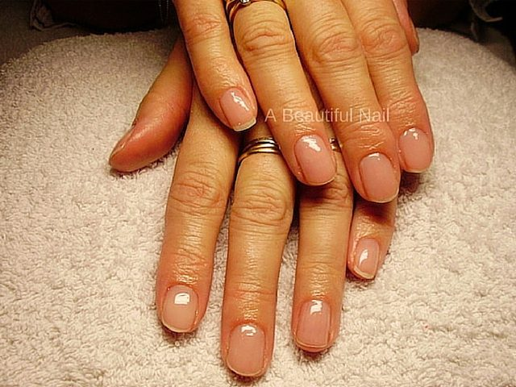
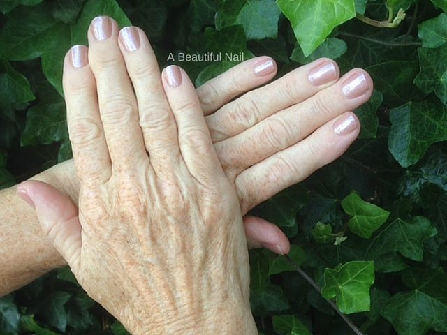
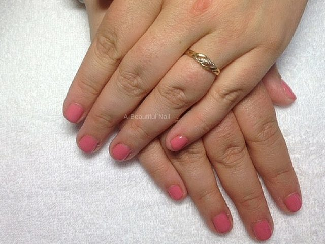
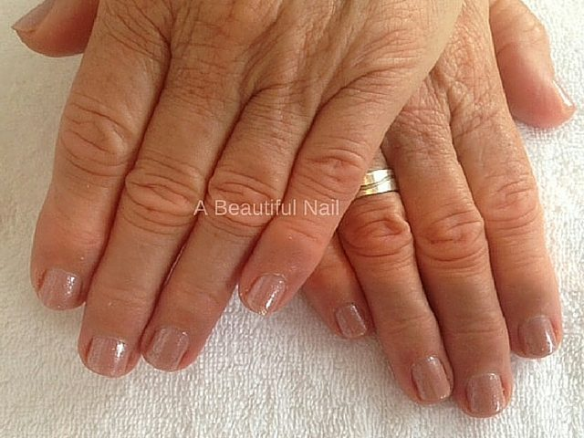
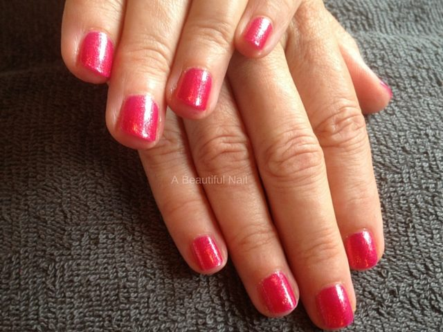
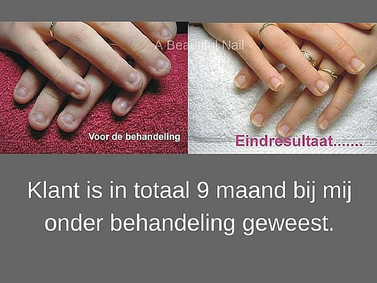

Een
Manicure
Nagelriemen behandelen, vijlen in de vorm die u wilt, handen in een voedende lotion, en dan polijsten of lakken. Ook als MAN-icure en als spa-behandeling met een handbad.
Vanaf€ 30,50
Nagelsalon in Apeldoorn · sinds mei 2005
Marja de Krosse werkt op de natuurlijke nagel: versteviging, geen verlenging. Met natuurlijke producten, in een salon waar u een uur lang de enige bent.
Openingstijden laden

Wat er mogelijk is
Alle drie op uw eigen nagel. Welke bij u past hangt af van hoe uw nagels nu zijn, en dat wordt bij binnenkomst bekeken.
Een
Nagelriemen behandelen, vijlen in de vorm die u wilt, handen in een voedende lotion, en dan polijsten of lakken. Ook als MAN-icure en als spa-behandeling met een handbad.
Vanaf€ 30,50
Twee
Een ultradunne gel op uw eigen nagel, zonder verlenging. Uw nagels krijgen de kans om te groeien zonder te scheuren of af te brokkelen. Minimaal drie weken houdbaar.
Vanaf€ 35,00
Drie
Versteviging in kleur of transparante glans, op basis van honderd procent gel. Blijft tot drie weken mooi zitten en beschadigt de nagel niet als hij deskundig wordt verwijderd.
Vanaf€ 35,00
Hoe hier gewerkt wordt

Wie u treft
Sinds 2005 gecertificeerd allround nagelstyliste. Om dat te houden volgt ze regelmatig trainingen en workshops.
Zij is een groot voorstander van een natuurlijk uitziende nagel en een goed verzorgde hand, en de behandelingen in de salon sluiten daar precies op aan. Naast de manicure en de versteviging zet ze nail-art, helpt ze nagelbijters en nageltrekkers van hun gewoonte af, en voorziet ze bruiden en bruidegoms van stralende handen.
Buiten de salon: partner van Nico, moeder van twee dochters en oma van twee kleinzoons.
Uit de salon
Geen modellenhanden. Dit zijn klanten van de salon, met de handen die ze hebben.






Apart verhaal
Nagelbijten en nageltrekken is een gewoonte waar je moeilijk vanaf komt. Kunstnagels erop zetten helpt meestal niet: die laten juist sneller los. Hier gaat het anders, met een behandelplan op maat en een gratis intakegesprek vooraf.

De salon is maandag, dinsdag en woensdag open van 9:15 tot 17:00. Werkt u dan zelf? Zet uw vraag hier klaar, dan belt Marja u terug op een moment dat u wel kunt.